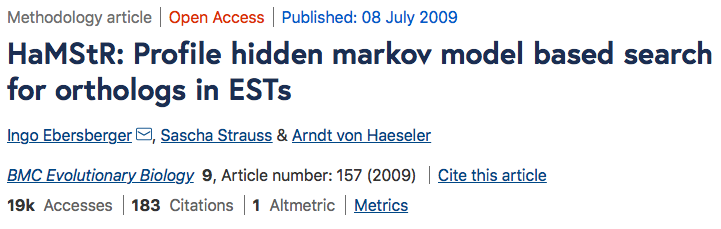

fDOG
Feature-aware Directed OrtholoG search
22.03.2021
Vinh Tran
Orthology
Homology

- Paralogs <- duplication
- Orthologs <- speciation
Applications


Mallo D. et al (2016), Syst Biol
RBH-based method

The origin of fDOG
HaMStR

HaMStR

fDOG
+
Introduction
Phylogenetic profiles

Presence/absence pattern of genes across a set of taxa
- transfer functions between genes
- trace functional protein clusters or metabolic networks across species
https://github.com/BIONF/PhyloProfile/

Input file


Method


Problem: large data set with 1605 seed proteins


OMA API WITH PYTHON
Install the libraries

Get protein sequence


Get protein sequence


Get protein annotation


Get orthologous group


Run for multiple seed proteins

Other use cases

- Get sequence info from different databases (e.g. NCBI, PDB,...)
- Perform sequence alignment with e.g. MAFFT, Clustal, T-Coffee, etc.
- Analyse population genetics or phylogenetics


Editors for Python
The Jupiter Notebook


Links